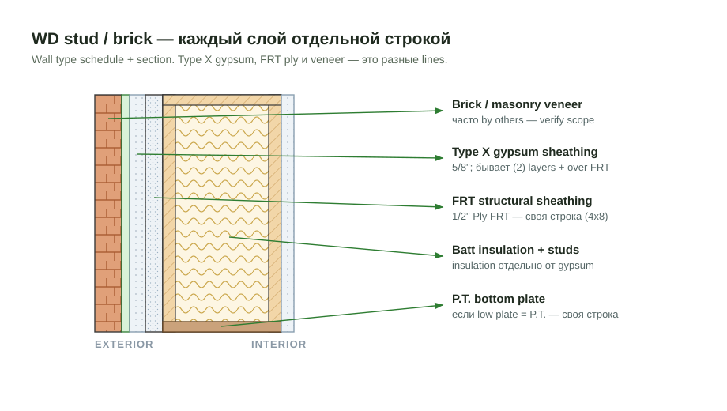
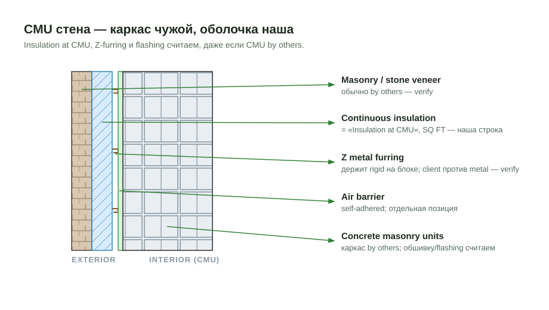

Exterior Wall Materials¶
Блок наружных материалов стены — то, что лежит поверх и внутри каркаса: обшивка (gypsum / ply / Zip), continuous insulation, flashing, bracing, window jambs и furring. Эти позиции легко потерять, потому что они спрятаны в wall sections / wall type schedule, а не на elevation.
Считаем материал, даже если каркас — чужой
Metal stud walls и CMU walls сам каркас часто by others. Но обшивка (sheathing/gypsum), insulation, flashing вокруг проёмов, bracing 2x4 и window jambs обычно остаются нашими. Не выкидывай весь блок стены только потому, что studs/CMU не считаем — пройди по wall section и собери material lines.
Exterior gypsum sheathing¶
Наружная gypsum sheathing (Type X, Exterior Grade, Densglass) идёт по
fire-rating и wall type schedule. Бывает в один или два слоя, и отдельно —
слой поверх FRT структурной обшивки.

5/8" Type X(=19/32") — стандартная exterior gypsum sheathing.- (2) layers — когда wall type / UL-assembly требует два слоя (см. схему).
- over FRT — gypsum поверх структурной
1/2" Ply FRTобшивки; это отдельная строка, не сливай с базовой. Densglassразноси по level/elevation, если schedule так делит.- Считается в
SQ FTплощади стены (gypsum) и в4x8листах (structural ply).

Иногда на стене несколько слоёв обшивки сразу — структурный ply + gypsum:

| Строка в takeoff | Материал | Unit |
|---|---|---|
Wall Sheathing |
5/8" Type X |
SQ FT |
Wall Sheathing (2) layers |
5/8" Type X |
SQ FT |
Wall Sheathing over FRT |
5/8" Type X |
SQ FT |
Wall Sheathing |
1/2" Ply FRT (structural) |
4x8 |
Box Sheathing |
1/2" Ply FRT |
4x8 |
Densglass over Zip
Часто в заметках: 5/8" Densglass Gypsum over Zip Sheathing. Это два
продукта — Zip (structural) + Densglass (gypsum) — обе строки в takeoff.
Insulation (continuous)¶
Continuous insulation (Cont. Insulation, R6 Zip, rigid) идёт по energy /
envelope sheets. Два разных места — на каркасных стенах и на CMU —
считаются отдельными строками, потому что площади и детали разные.

Insulation— continuous insulation на наружной грани каркасных стен.Insulation at CMU— continuous insulation на CMU (бетонный блок) стенах. Это отдельная позиция, её площадь обычно больше (вся CMU-оболочка).- Считается в
SQ FT. - Под insulation на CMU часто крепят Z metal furring (см. ниже Furring).

| Строка в takeoff | Материал | Unit |
|---|---|---|
Insulation |
1.5" Cont. Insulation |
SQ FT |
Insulation at CMU |
1.5" Cont. Insulation |
SQ FT |
Insulation at 6" Ext. Walls |
batt / rigid по детали | SQ FT |
Rigid Insulation |
rigid board | SQ FT |
Metal stud walls — что остаётся нашим¶
Даже если metal studs by others, по wall section обычно наши:
- Exterior gypsum sheathing — material для metal стен нужен, считаем
(
5/8" Type X, слои по wall type). - Bracing 2x4 — temporary/permanent bracing остаётся:
Bracing Ext Walls,Bracing Corridor,Bracing Demising— все2x4. - Flashing вокруг openings —
Window Flashing at Mtl Walls,Sill Flashing at Mtl Walls. - Window jambs — иногда в metal стенах проёмы добирают доской (
2xjamb), смотри внимательно (см. ниже).
| Строка в takeoff | Материал | Unit |
|---|---|---|
Bracing Ext Walls |
2x4 |
LFT |
Bracing Corridor |
2x4 |
LFT |
Bracing Demising |
2x4 |
LFT |
Flashing вокруг проёмов¶
Flashing вокруг окон и дверей разделяется по типу стены (wood / Mtl / CMU / concrete) и идёт отдельными строками, потому что у каждого типа свой detail и свой подрядчик. Полная логика, формулы LFT и правило про двери (у дверей нет Sill Flashing) — на отдельной странице:
Здесь, в Exterior Wall Materials, эти строки появляются как наш material
по Mtl Walls / CMU Walls — см. примеры в блоке такейофа ниже.
Window jambs — доска в проёмах¶
В metal стенах проёмы окон/дверей иногда добирают деревянной доской
(2x4 / 2x8 jamb) — это наш material, легко пропустить.
- Глубина стены задаёт size:
2x4тонкая,2x8/2x10толстая (CMU + insulation - furring). Бери из section.
- Если на плане jambs не используются, фиксируй note:
Assumed window jambs 2x4 are not used page A8.53; verify— это видно на drawing, не угадывай.
Полная логика jambs — Furring & Window Jambs.
Furring¶
Две разные вещи, обе называются "furring", но это разный product:
| Тип | Где | Типовой size | Назначение |
|---|---|---|---|
| Z metal furring | на CMU / под insulation | Z furring (metal) |
держит continuous / rigid insulation на CMU |
| Furring под siding | за siding на каркасе | 1x4 или 2x4 P.T. |
rainscreen / ровная nailing-плоскость / зазор |
- Z metal furring идёт вместе с
Insulation at CMU— металлический Z-профиль крепит rigid insulation к блоку. Если client не хочет metal — verify scope. - Furring под siding бывает
1x4(лёгкая рейка) или2x4P.T. (толще, по structural / у влажных зон). P.T. и не-P.T. — разные строки. - Если в заметке
Furring strips under the siding system are not utilized— значит на этом проекте siding furring чужой/нет, но проверь по section.
Подробно про furring и P.T. — Furring (walls) и Furring & Window Jambs.
Пример из реального takeoff (EBS)¶
Блок наружных материалов на одном этаже (Hempstead Main St, FRT wood + CMU + metal openings):
Wall Sheathing 5/8" Type X 6670 SQ FT
Wall Sheathing (2) layers 5/8" Type X 2530 SQ FT
Wall Sheathing over FRT 5/8" Type X 4190 SQ FT
Wall Sheathing 1/2" Ply FRT 298 4x8
Box Sheathing 1/2" Ply FRT 75 4x8
Insulation 1.5" Cont. Insulation 6670 SQ FT
Insulation at CMU 1.5" Cont. Insulation 13350 SQ FT
Bracing Ext Walls 2x4 ... LFT
Bracing Corridor 2x4 ... LFT
Bracing Demising 2x4 ... LFT
Window Flashing at Mtl Walls Flashing Tape 1650 LFT
Sill Flashing at Mtl Walls Sill Flashing 670 LFT
Window Flashing at CMU Walls Flashing Tape 190 LFT
Заметки с того же job (так фиксируют решения и пропуски):
Assumed window jambs 2x4 are not used page A8.53; verifyFurring strips under the siding system are not utilized as indicated on page a8.53; verify
Чек перед выводом¶
- Прошёл по wall section, а не только elevation?
- Exterior gypsum (
Type X) посчитан, даже если studs/CMU чужие? - Слои gypsum разделены: 1 слой / (2) layers / over FRT?
-
Insulation(на каркасе) иInsulation at CMU— две отдельные строки? -
BracingExt / Corridor / Demising2x4есть для metal стен? - Flashing разделён по Mtl / CMU / wood walls?
- Проверил window jambs в metal стенах (доска в проёме)?
- Z metal furring под insulation на CMU?
- Furring под siding
1x4/2x4P.T. — нужный size и P.T.?
See also¶
- Wall Sheathing
- Box Sheathing
- Exterior Walls
- Furring (walls)
- Furring & Window Jambs
- Window Flashing & Sill — flashing вокруг проёмов.
- Flashing (roof / wall / deck)